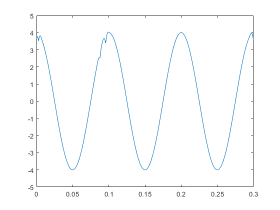
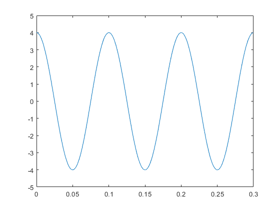

Contents
Initialization
close all
Sensor placement
s0 = [0 0];
s1 = [100 0];
s2 = [0 100];
s3 = [100 100];
Grid design
grid = cell(100,100);
for i = 1:100
for j = 1:100
grid{i,j} = [ (10*i-5) (10*j+995)];
end
end
Distance function usage example
dist1 = distance(s0,s1);
dist1 = distance(s0, grid{30,80});
Avalanche condition generation
randx = randi(100,1,1);
randy = randi(100,1,1);
origin_point = {randx,randy};
origin = grid{randx, randy};
tempc = randi([-40 10],1,1)
speed_of_sound = 331.3 * sqrt(1 + (tempc / 273.15))
tempc =
-22
speed_of_sound =
317.6782
Calculate distance to sensors
d0 = distance(s0,origin);
d1 = distance(s1,origin);
d2 = distance(s2,origin);
d3 = distance(s3,origin);
delta1 = d1 - d0;
delta2 = d2 - d0;
delta3 = d3 - d0;
Signal Generation
figure();
t = 0:1/3413:0.3;
signal0 = cos(10*2*pi.*t);
wavelength = speed_of_sound/10;
shift1 = delta1/wavelength;
shift2 = delta2/wavelength;
shift3 = delta3/wavelength;
signal1 = cos(10*2*pi.*(t-shift1/10));
signal2 = cos(10*2*pi.*(t-shift2/10));
signal3 = cos(10*2*pi.*(t-shift3/10));
signal0 = awgn(signal0,25);
signal1 = awgn(signal1,25);
signal2 = awgn(signal2,25);
signal3 = awgn(signal3,25);
plot(t,signal0), hold on
plot(t,signal1);
plot(t,signal2);
plot(t,signal3);
legend('Sensor 0', 'Sensor 1', 'Sensor 2', 'Sensor 3');
title("Signals seen by sensors");
xlabel("Time");
ylabel("Amplitude"); hold off;
amplitude = max(signal0(:));
filt0 = lowpass(signal0,20,3413);
filt1 = lowpass(signal1,20,3413);
filt2 = lowpass(signal2,20,3413);
filt3 = lowpass(signal3,20,3413);
Algorithim execution
[guess, height] = algorithm(s0,s1,s2,s3,filt0,filt1,filt2,filt3,grid,speed_of_sound);
Summed waveformed has surpassed 80% amplitude threshold
An avalanche has been detected

Plot
figure();
gscatter(0,0,'Sensor 0', 'b'),hold on
gscatter(0,100,'Sensor 1', 'r');
gscatter(100,0,'Sensor 2', 'y');
gscatter(100,100,'Sensor 3', 'm');
xlim([-100 1100]),ylim([-100 2100]);
scatter([origin(1)],[origin(2)],'filled');
scatter([guess(1)],[guess(2)],'filled');
legend('Sensor 0', 'Sensor 1', 'Sensor 2', 'Sensor 3', 'True Origin','Predicted Origin');
title("Sensor Grid");
x1 = [];
y1 = [];
for x = 1:10
for y = 1:10
z = grid{x,y};
k1 = [(z(1) - 5) (z(1) +5) (z(1) +5) (z(1) -5) (z(1) -5)];
k2 = [(z(2) + 5) (z(2) +5) (z(2) -5) (z(2) -5) (z(2) +5)];
x1 = [x1 k1];
y1 = [y1 k2];
end
plot(x1,y1,'b','HandleVisibility', 'off'), hold on;
x1 = [];
y1 = [];
end
for x = 1:10
for y = 1:10
z = grid{x*10,y*10};
k1 = [(z(1) - 50) (z(1) +50) (z(1) +50) (z(1) -50) (z(1) -50)] - 45;
k2 = [(z(2) + 50) (z(2) +50) (z(2) -50) (z(2) -50) (z(2) +50)] - 45;
x1 = [x1 k1];
y1 = [y1 k2];
end
plot(x1,y1,'b','HandleVisibility','off'),xlabel("m"),ylabel("m")
x1 = [];
y1 = [];
end
hold off;

Error calculation
d_1 = distance(s0,origin);
d_2 = distance(s0,guess);
percent_error = sqrt((d_2 - d_1)^2)/d_1 * 100
percent_error =
0.9437
Prediction algorithm
function [predict, amp] = algorithm(s0,s1,s2,s3,signal_0,signal_1,signal_2,signal_3,grid,speed)
amp = 0;
amp_check = sqrt(2)/2 * 4 * 0.8;
predict = {1,1};
for i = 1:100
for k = 1:100
distance0 = distance(s0,grid{i,k});
distance1 = distance(s1,grid{i,k});
distance2 = distance(s2,grid{i,k});
distance3 = distance(s3,grid{i,k});
delta_1 = distance1 - distance0;
delta_2 = distance2 - distance0;
delta_3 = distance3 - distance0;
wave_length = speed/10;
shift_1 = delta_1/wave_length;
shift_2 = delta_2/wave_length;
shift_3 = delta_3/wave_length;
signal1_shift = circshift(signal_1,round(-shift_1*1024/3));
signal2_shift = circshift(signal_2,round(-shift_2*1024/3));
signal3_shift = circshift(signal_3,round(-shift_3*1024/3));
beamformed = signal_0 + signal1_shift + signal2_shift + signal3_shift;
beamformed_plot = beamformed;
beamformed = (beamformed).^2;
beamformed = sqrt(beamformed);
amplitude = mean(beamformed);
if amplitude > amp
amp = amplitude;
predict = grid{i,k};
beamformed_plot_final = beamformed_plot;
end
end
end
figure();
t = 0:1/3413:0.3;
plot(t,beamformed_plot_final);
if amp > amp_check
disp('Summed waveformed has surpassed 80% amplitude threshold')
disp('An avalanche has been detected')
end
end
Distance function definition
function dist = distance(p1,p2)
a = p2(1);
b = p2(2);
dist = sqrt(abs((p2(1) - p1(1))^2 + (p2(2)-p1(2))^2));
end